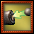
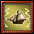
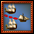
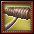
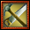
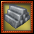
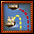
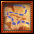
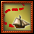
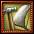

Freetrader Skills:
Desperation - Level:

Disabling - Level:




Escape - Level:


Provisions - Level:

Ship Mastery (RECOMMENDED) - Level:


Smuggling - Level:



Trade (RECOMMENDED) - Level:

Travel - Level:

Career - Skills:

Underdog
Description:Improves a wide range of ship parameters. Can only be used when your current total armor for all facings is below 82% of the max (the equivalent of 50% damage on one broadside).
Requirements:
- average armour on all facings below 82% of max integrity
Duration: 5 minutes
Morale Cost: 40
Self Effects:
- Maximum Ship Speed, Battle: +3%
- Running Speed, Battle: +3%
- Damage: +7.5%
- Ship Acceleration: +7.5%
- Turn Rate, Battle: +7.5%
Dump Guns
Description:Dump guns overboard to increase speed for 30s. Also prevents you from using any single or combined gun repair for 5 minutes.
Requirements:
- Your ship's guns must be at least 20%
- You must be level 3
Duration: 5 minutes
Morale Cost: 20
Self Effects:
- Maximum Ship Speed, Battle: +15%
- Ship Acceleration: +25%
- Damage Batteries: 20%
Desperation Fire
Description:Attack. Increased damage shot that also damages your own armor.
Reset Timer: 1 minute
Target: Enemy
Morale Cost: 20
- Damage Port Armor: 5%
- Damage Starboard Armor: 5%
- Damage Bow Armor: 5%
- Damage Stern Armor: 5%
- Damage: +45%
Rum Ration
Description:Buff: Passing out an additional ration of rum to your crew will make them work harder but maintaining this positive effect may become expensive.
Consumes 5 units of Keg of Rum, Rough.
Requirements:
- 5 units of Keg of Rum, Rough
- You must be level 7
Duration: 5 minutes
Morale Cost: 30
Self Effects:
- Reload Rate: +10%
- Turn Rate, Battle: +10%
- Ship Acceleration: +10%
- Maximum Morale: +10
Hasty Fire
Description:Buff: Increases your reload rate at the expense of safety, leaving your crew more vulnerable to enemy attacks.
Requirements:
- You must be level 9
Duration: 2 minutes
Morale Cost: 20
Self Effects:
- Reload Rate: +50%
- Crew Damage Resistance: -40%
Disorienting Shot
Description:Attack Debuff (Primary). Reduces the target's turn rate and acceleration.
The reduction gets stronger with each additional hit in the broadside (up to a maximum of -35% turn rate / -20% Acceleration).
Reset Timer: 2 minutes
Target: Enemy
Duration: 1 minute
Morale Cost: 30
- First Hit Bonus: 6
- Per-hit Bonus: 1
- Maximum Hits: 14
- Ship Acceleration: -1%
- Turn Rate, Battle: -1.75%
Cut Shroud
Description:Attack Debuff (Secondary). Reduces the target's battle speed. The reduction gets stronger with each additional hit in the broadside (up to a maximum of -24% battle speed).
Requirements:
- You must be level 3
Target: Enemy
Duration: 1 minute
Morale Cost: 20
- First Hit Bonus: 7
- Per-hit Bonus: 1
- Maximum Hits: 7
- Maximum Ship Speed, Battle: -2%
Shred Sails
Description:Attack. A moderate-damage broadside that target's sails.
Requirements:
- Dismantling Shot
Target: Enemy
Morale Cost: 20
Self Effects:
- Damage: +35%
Shred Armor
Description:Attack. Ignores 90% targes damage reduction.
Requirements:
- You must be level 7
Target: Enemy
Morale Cost: 30
Self Effects:
- Damage: +20%
- Armor Damage Reduction, All: -90%
Disrupt Formation
Description:Attack Debuff (Primary). Reduces the accuracy and target tracking of the target.
The reduction gets stronger with each additional hit in the broadside (up to a maximum of -6 accuracy and target tracking).
Reset Timer: 3 minutes
Target: Enemy
Duration: 1 minute debuff. Self-buff just for one broadside
Morale Cost: 30
- First Hit Bonus: 4
- Per-hit Bonus: 1
- Maximum Hits: 8
- Accuracy, All: +10
- Damage: +10%
- Accuracy, All: -0.5
- Target Tracking: -0.5
Repel Grapples
Description:Buff: Reduces your vulnerability to grappling attacks.
Reset Timer: 3 minutes
Duration: 1 minute
Morale Cost: 20
Self Effects:
- Grappling Defense: +25
Defense
Description:Toggle. Increases defense, turn rate and crew recovery rate.
Reset Timer: 3 seconds
Duration: Toggle
Morale Cost: 20
Self Effects:
- Defense, All: +5
- Turn Rate, Battle: +5%
- Crew Recovery Rate: +5%
- Maximum Morale: -20
Deter Pursuit
Description:Attack Debuff (Primary). Reduces the speed of the target enemy. You cannot stack two speed debuffs on a target. Requires dismantling shot
Requirements:
- Dismantling Shot
Target: Enemy
Duration: 30 seconds
Morale Cost: 30
Target Effects:
- Maximum Ship Speed, Battle: -50%
Evasion
Description:Buff: Greatly increases your defense for a short time.
Reset Timer: 3 minutes
Duration: 20 seconds
Morale Cost: 20
Self Effects:
- Defense, All: +25
- Accuracy, All: -3
Determination
Description:Buff: Improves your ship's ability to withstand damage, as well as crew and morale recovery(2m).
Reset Timer: 8 minutes
Duration: Instant
Morale Cost: 40
Self Effects:
- Damage Resistance: +15%
- Crew Recovery Rate: +15%
- Morale Recovery Rate: +15%
Provision Allies: Defense
Description:Group Buff: Improves the performance of your defense and your group members. Overrides Provision Allies: Boarding.
You gain both the self, and the target effects.
Reset Timer: 8 minutes
Target: Group
Duration: 4 minutes
Morale Cost: 25
Range: 500y
Self Effects:
- Defense, All: +2
- Sail Defense: +3
- Defense, All: +2
- Sail Defense: +3
Provision Allies: Maneuver
Description:Group Buff: Improves the performance of your turn rate/ accleration and your group members.You gain both the self, and the target effects. Overrides Provision Allies: Offense.
Reset Timer: 8 minutes
Target: Group
Duration: 4 minutes
Morale Cost: 25
Range: 500y
Self Effects:
- Ship Acceleration: +10%
- Turn Rate, Battle: +6%
- Ship Acceleration: +10%
- Turn Rate, Battle: +6%
Provision Allies: Boarding
Description:Improves the performance of your crew and your group members. You gain both the self, and the target effects. Overrides Provision Allies: Defense.
Reset Timer: 8 minutes
Target: Group
Duration: 4 minutes
Morale Cost: 25
Range: 500y
Self Effects:
- Grappling Defense: +10
- Grappling Offense: +5
- Crew Damage Resistance: +10%
- Grappling Defense: +10
- Grappling Offense: +5
- Crew Damage Resistance: +10%
Provision Allies: Offense
Description:Group Buff: Improves the performance of your offensive and your group members. You gain both the self, and the target effects. Overrides Provision Allies: Maneuver.
Reset Timer: 8 minutes
Target: Group
Duration: 4 minutes
Morale Cost: 25
Range: 500y
Self Effects:
- Accuracy, All: +2
- Reload Rate: +3%
- Damage: +3%
- Accuracy, All: +2
- Reload Rate: +3%
- Damage: +3%
Extra Rations
Description:Group Buff: Increases your reload rate, maximum morale and morale recovery of nearby group mates. You gain both the self, and the target effects.
Reset Timer: 5 minutes
Target: Group
Duration: 2 minutes
Morale Cost: 40
Range: 500y
Self Effects:
- Reload Rate: +10%
- Maximum Morale: +10
- Morale Recovery Rate: +20%
- Reload Rate: +10%
- Maximum Morale: +10
- Morale Recovery Rate: +20%
Debilitating Broadside
Description:Attack Debuff (Primary). Reduces the target ship's reload rate, turn rate and acceleration. The reduction gets stronger with each additional hit in the broadside (up to a maximum of -15%).
Requirements:
- You must be facing port or starboard side of the target
- Round Shot
Target: Enemy
Duration: 45 seconds
Morale Cost: 40
- First Hit Bonus: 5
- Per-hit Bonus: 1
- Maximum Hits: 10
- Reload Rate: -1%
- Ship Acceleration: -1%
- Turn Rate, Battle: -1%
Plug Leaks
Description:Gradually repairs armor and structure damage while giving an offensive and defensive buff.
Requirements:
- Damaged Armor
Duration: 60 seconds
Morale Cost: 30
Self Effects:
- Repair Port Armor: 10%
- Repair Starboard Armor: 10%
- Repair Bow Armor: 10%
- Repair Stern Armor: 10%
- Repair Hull: 10%
- Damage: +5%
- Reload Rate: +5%
- Accuracy, All: +2
- Armor Damage Resistance: +15%
- Structure Damage Resistance: +5%
Overloaded Shot
Description:Attack. Increased damage shot that reduces your accuracy for a short time afterwards.
Reset Timer: 3 minutes
Target: Enemy
Duration: 30 seconds
Morale Cost: 30
Self Effects:
- Accuracy, All: -2
- Target Tracking: -2
- Damage: +50%
Rebuild Rig
Description:Gradually repairs sails while giving a maneverability and mast defense bonus.
Requirements:
- Damaged Sails
Duration: 60 seconds
Morale Cost: 30
Self Effects:
- Repair Bowsprit: 15%
- Repair Foremast: 15%
- Repair Mainmast: 15%
- Repair Mizzenmast: 15%
- Turn Rate, Battle: +10%
- Ship Acceleration: +15%
- Mast Damage Resistance: +15%
High Grade Armament
Description:Passive skill. Increases the damage, accuracy and range of your cannons.
- Passive Skill
- Damage: +5%
- Accuracy, All: +2
- Maximum Cannon Range: +2%
Ranging Shot
Description:Attack. Increases your accuracy and range for a short time. The improvement gets stronger with each additional hit from a single broadside (up to a maximum of +15%).
Reset Timer: 2 minutes
Target: Enemy
Duration: 30 seconds
Morale Cost: 20
- First Hit Bonus: 4
- Per-hit Bonus: 1
- Maximum Hits: 11
- Accuracy, All: +1
- Maximum Cannon Range: +1%
Smuggled Cargo
Description:Passive skill. Reduces the amount of cargo lost when you surrender by half. The target of your surrender is not told of the quantitty decrease. Also lowers your Open Sea visibility and buffs your Open Sea speed.
- Passive Skill
- Stealth, Open Sea: +15%
- Stealth, Open Sea: -105
- Spotting Other Ships, Open Sea: +60
- Maximum Ship Speed, Open Sea: +5%
- Surrendered Loot: -50%
Give the Slip
Description:Decreases Open Sea speed of nearby enemies for 30s and increases your Open Sea turn rate and speed, but also prevents you from initiating combat for the 15s.
Requirements:
- On the Open Sea
Target: Enemy
Duration: 30 seconds
Morale Cost: 0
Range: 15mi
Self Effects:
- Turn Rate, Open Sea: +75%
- Maximum Ship Speed, Open Sea: +10%
- Maximum Ship Speed, Open Sea: -30%
Skilled Negotiator
Description:An upgraded Claim Price. Provides a high chance to get multiple commendations from a single derelict.
Requirements:
- Derelict
Target: Derelict
Range: 100y
Misdirection
Description:Open Sea skill. Temporarily increases your Open Sea sailing speed and reduces the attack range of nearby enemies by 75%.
Requirements:
- On the Open Sea
Target: Enemy
Duration: 15 seconds
Self Effects:
- Maximum Ship Speed, Open Sea: +15%
- Max Attack Range, Open Sea: -75%
Tax Evasion
Description:Passive Skill. Reduces the taxes you pay on production in enemy ports. Also buffs your armor
Requirements:
- Passive Skill
- Tax Rate Adjustment: -50%
- Armor Integrity: +5%
Inspiration
Description:Group Buff: Improves the acceleration and resistance of your group. This has twice as much benefit for you as it does for yuor group.
Reset Timer: 8 minutes
Target: Group
Duration: 4 minutes
Morale Cost: 45
Range: 1000y
Self Effects:
- Ship Acceleration: +5%
- Armor Damage Resistance: +4%
- Structure Damage Resistance: +4%
- Ship Acceleration: +5%
- Armor Damage Resistance: +4%
- Structure Damage Resistance: +4%
Optimal Rigging
Description:Passive skill. Increases maximum ship speed.
- Passive Skill
- Maximum Ship Speed, Battle: +4%
- Maximum Ship Speed, Open Sea: +4%
- Running Speed, All: +2%
Before the Wind
Description:Toggle: Increases your battle speed, extra improvement while sailing downwind.
Reset Timer: 3 seconds
Duration: Toggle
Morale Cost: 20
Self Effects:
- Maximum Ship Speed, Battle: +3%
- Broad Reach Speed, Battle: +5%
- Running Speed, Battle: +5%
- Maximum Morale: -20
Sailhandling Drills
Description:Passive skill. Increases your maneuverability, your downwind speed and defense.
- Passive Skill
- Turn Rate, Battle: +7.5%
- Ship Acceleration: +7.5%
- Running Speed, All: +2%
- Broad Reach Speed, All: +2%
- Defense, All: +2
Travel
Description: Passive. Increases speed in the Open Sea.- Passive Skill
- Maximum Ship Speed, Open Sea: +15%
Battle Preparations: Maneuver
Description:Buff: Increases your ship's maneuverability. Triggers a two minutes cooldown on other battle preparations.
Reset Timer: 8 minutes
Duration: 4 minutes
Morale Cost: 30
Cooldown category: Battle Preparations
Self Effects:
- Turn Rate, Battle: +20%
Battle Preparations: Defense
Description:Buff: Increases your defense. Triggers a two minutes cooldown on other battle preparations.
Reset Timer: 8 minutes
Duration: 4 minutes
Morale Cost: 30
Cooldown category: Battle Preparations
Self Effects:
- Defense, All: +4
- Armor Damage Resistance: +4%
- Structure Damage Resistance: +4%
Battle Preparations: Offense
Description:Buff: Increases your offense. Triggers a two minutes cooldown on other battle preparations.
Reset Timer: 8 minutes
Duration: 4 minutes
Morale Cost: 30
Cooldown category: Battle Preparations
Self Effects:
- Accuracy, All: +4
- Reload Rate: +5%
- Damage: +5%
Distraction
Description:Debuff (Primary). Reduces the damage, range and maximum morale of all enemies within a 300 yards radius.
Reset Timer: 3 minutes
Target: All enemies
Duration: 3 minutes
Morale Cost: 20
Range: 300y
Target Effects:
- Maximum Cannon Range: -5%
- Damage: -5%
- Maximum Morale: -5
Career: Freetrader
Description:As a member of the Freetrader career, your ships are constructed to your order at private shipyards, and are designed for quick reload and resilience.
- Passive Skill
- Reload Rate: +6%
- Running Speed, All +3%
- Damage Resistance: +3%
- Ship Defeat XP(Missions): -50%
Expert Repairs
Description:Nail a few planks up and hoist some canvas as improved sails, and you can hold a damaged ship together.
Requirements:
- Damaged Armor or Sails
- You must not have the effect Unable to Repair
- Your morale must be at least 35
Duration: 45 seconds
Morale Cost: 35
Self Effects:
- Repair Port Armor: 30%
- Repair Starboard Armor: 30%
- Repair Bow Armor: 30%
- Repair Stern Armor: 30%
- Repair Hull: 15%
- Repair Bowsprit: 30%
- Repair Foremast: 30%
- Repair Mainmast: 30%
- Repair Mizzenmast: 30%
- Armor Damage Reduction: +10%
- Mast Damage Reduction: +5%
- Structure Damage Reduction: +5%
Economic Specialist
Description:Passive skill. Enables the use of advances Freetrader Recipes and allows you to browse and purchase (depending on your reputation) auction listings in distant regions. Also provides a small ship combat stat bonus.
Visit the Freetrader Recipe Trainer at the Company Office in your nation's capital to purchase these recipes.
- Passive Skill
- Structure Damage Resistance: +3%
- Doubloon Bonus, NPC Defeat: +5%
Provision Ally
Description:This skill launches a longboat, which will sails to your target and repair 25% of their armor and 20% of their sails. The longboat can be destroyed by the enemy.
This skill consumes one Launch
Requirements:
- You must have 1 Launch
- Your morale must be at least 30
Target: Ally
Duration: Instant
Morale Cost: 30
Cooldown category: Provisioning
Target Effects:
- Repair Armor: 25%
- Repair Sails: 20%
Expensive Ship
Description:Passive skill. Increases your armor, structure, sails and your cargo capacity.
- Passive Skill
- Armor Integrity: +3%
- Structural Integrity: +5%
- Mast Integrity: +5%
- Spotting Other Ships, Open Sea: +150
- Cargo Capacity: +10%
Mercenaries
Description:Buff: You turn over command to an experienced band of hired Mercenaries, who will lead the crew in more effective battle strategies. Your crew will be in a disarray for a while after .
Reset Timer: 10 minutes
Duration: 3 minutes
Morale Cost: 30
Self Effects:
- Maximum Ship Speed, Battle: +10%
- Ship Acceleration: +10%
- Turn Rate, Battle: +10%
- Damage Resistance: +5%
- Grappling Defense: +10
- Grappling Offense: +10
- Damage: +10%
- Reload Rate: +10%
- Accuracy, All: +3
Duration: 7 minutes
- Speed, Battle, Reload, Damage, Accel: -3%
- Damage Resistance, Turning: -2.5%
- Grappling Def, Off: -2
Pirates of the Burning Sea (PotBS) - Skill Checker
Pirates of the Burning Sea (PotBS) is an online pirate game. You can use the Skill-Checker to easily check and share your skill-settings. As with any skill-planing-tool you might want to try different settings to find your best set-up. Just send the skill-code to your buddies and let them have a look at your carrer settings.
� gumworm.com, all rights reserved | Imprint